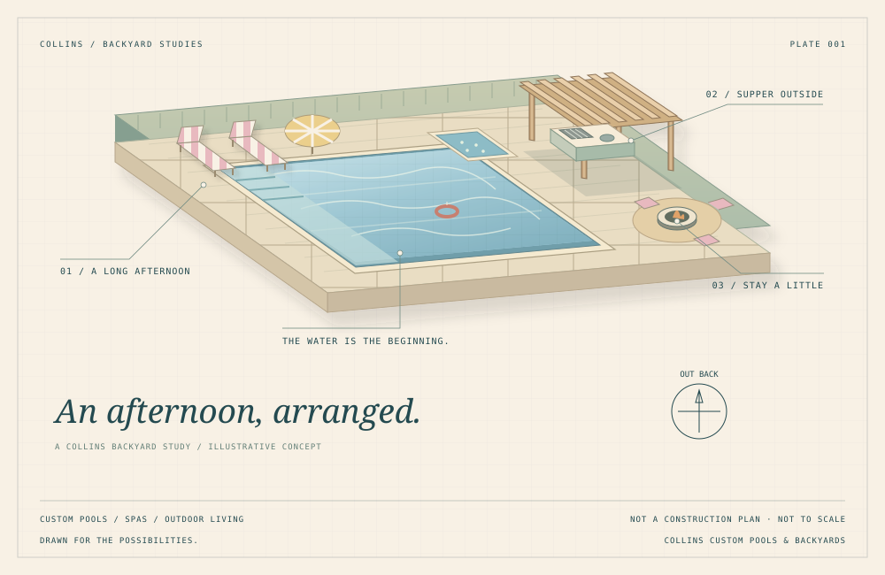

COLLINS / BACK AT POOLSIDE / AUBREY, TEXAS
Back on
the coping.
Custom pools. Complete backyards.
Denton County and surrounding North Texas communities.
 VESSEL 01 / BACK AT THE DOCK ↗
VESSEL 01 / BACK AT THE DOCK ↗You’ve seen the view from below. Now picture the life around it.
Board the submarine ↗01 / THE BACKYARD DESK
The pool.
And everything around it.
A place to swim, cook, find some shade, or sit by the fire. We plan the pieces together.

A FEW POSSIBILITIES / CHOOSE A LITTLE OF EACH
The long way
through an afternoon.
A few laps. A shallow step. A spa when the air gets cool. A custom pool begins with how you want to spend your time.
CUSTOM POOLS / SPAS / POOL REMODELS
A drawing to start a conversation.
Your yard will have a plan of its own.
01New custom pools
A custom pool starts with your yard and how you want to use it. Shape, swim space, steps, spa, and the places around the water all belong in the conversation.
Talk about a pool ↗02Complete backyards
Patios, pergolas and shade structures, outdoor kitchens, turf, and fire features—planned around the pool and the life you want out back.
Plan the whole backyard ↗03Spas & pool remodels
A spa, a pool refresh, or a different way to use the space you already have. Bring your ideas and a few photographs; we can start there.
Discuss your existing space ↗02 / THE POOLSIDE ARCHIVE
The real
backyards.
Eight albums. Ninety-four photographs. Open a cover and have a proper look around.
The photographs are on their way.
These are draft albums. Their names are supplied; their photographs and project details are still to come.Tell us what you have in mind ↗03 / THE PEOPLE OUT BACK
A family business.
Close to home.
We're Collins Custom Pools & Backyards, a family-owned builder serving Denton County and surrounding North Texas communities.
We're based in the Aubrey area. Our work centers on new custom pools and complete backyard projects, with space for the things that make a yard yours.
04 / A NOTE FROM YOUR BACKYARD
Leave a note
on the desk.
A whole new pool, the entire backyard, or a space that needs another look.
Call or text Collins to start a conversation.
Your backyard, in a few words.
Prepare a note below, then open it in Messages or call us. You choose when to send. There is no automatic website submission.